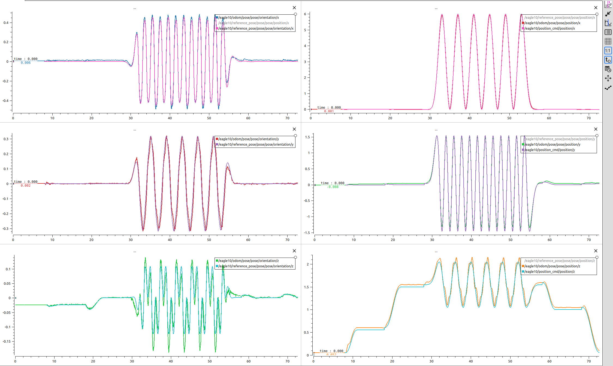

Wrench mode
Force-and-torque commands.
Controls · Embedded firmware · Flight testing
A firmware port and Jetson interface for testing responsive low-level control during autonomous flight in a confined indoor space.
Test-campaign figures; the demo below is not identified as the maximum-speed run.
The problem
In the lab’s existing PX4 P–PID configuration, autonomous flights failed during tight turns when the low-level response could not keep up with the maneuver. We introduced INDI to investigate a more responsive alternative.
My contribution
The hardest integration issue was the difference in coordinate-frame conventions between the source and target implementations. Commands and measured states needed consistent interpretation across the interface.
Flight demonstration
The test campaign exercised both command modes in real-world flights. This video and the accompanying plots show DQ-NMPC as the high-level controller, commanding the INDI loop in TRPY mode.
The results demonstrate flight integration. A matched PX4–INDI comparison would be needed to quantify the response-time improvement.
System interface
The Jetson’s high-level controller uses custom ROS topics to send the selected control type and actions through the Pi protocol over UART. Flight-controller states return through the interface as feedback.
Force-and-torque commands.
Thrust plus roll, pitch, and yaw rate commands.
Controller principle
Incremental Nonlinear Dynamic Inversion (INDI) compares desired acceleration with the measured response. An estimate of actuator effectiveness maps that difference to an incremental control correction. Acceleration feedback captures disturbance effects without requiring a complete model of them.
In this implementation, filtered IMU feedback feeds a bounded control-allocation step. Sensor quality, filtering, and actuator limits remain important to performance.
Further reading: Fusion Engineering’s PID–INDI explanation and wind-tunnel comparison ↗ (external experiments).
Tracking evidence
The six plots compare reference, odometry, and command signals during repeated maneuvers. Position components appear on the right; pose-orientation components appear on the left. The orientation components are not roll, pitch, and yaw angles.

Attribution
The underlying INDI source credits Till Blaha, Delft University of Technology. The port, communication interface, and lab integration described above are my contribution.